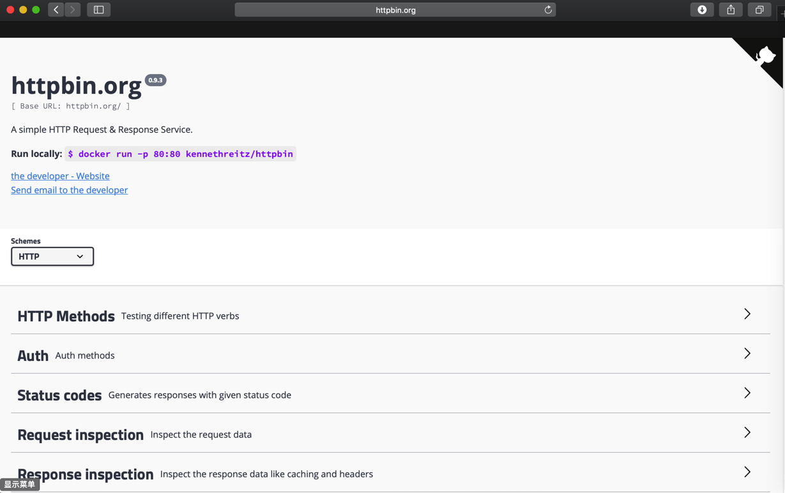
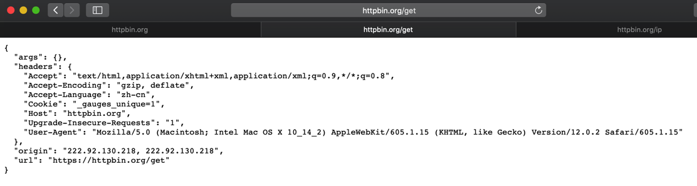
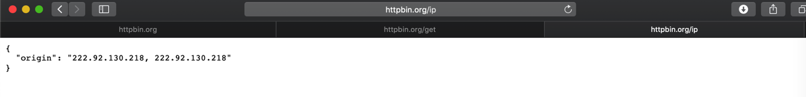
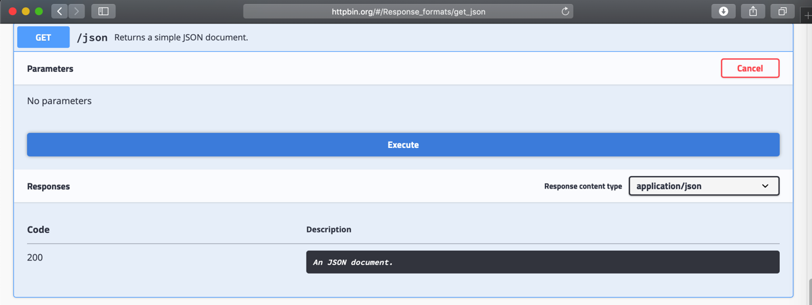
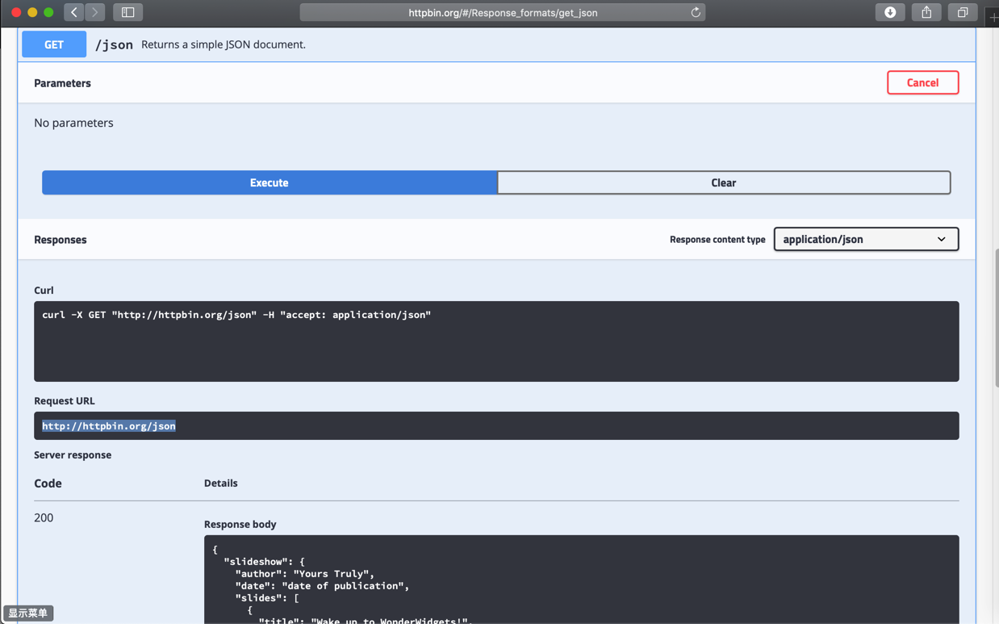

HTTP工具
此处整理HTTP相关的库和工具：
Postman
可用于服务器端和其他移动端等，调试接口数据返回是否正常
举例：比如用Postman去调试奶牛云的后台的登录接口：

更多内容详见另外的教程：API开发利器：Postman
Chrome的开发者工具Developer Tools
调试页面内容是否正常，包括布局，参数等等
详见：【总结】浏览器中的开发人员工具（IE9的F12和Chrome的Ctrl+Shift+I）-网页分析的利器
curl
模拟去请求服务器数据的命令行工具
HTTPie
后来从jobbole/awesome-python-cn: Python资源大全中文版中知道了还有个HTTPie
- Github: jakubroztocil/httpie: Modern command line HTTP client
- 官网：HTTPie – command line HTTP client
- 简介：
HTTPie is a command line HTTP client with an intuitive UI, JSON support, syntax highlighting, wget-like downloads, plugins, and more
看了下，比curl更好用，更方便。值得推荐。
Httpbin
Httpbin 是一个网站：
用于测试http各方面的内容。
首页：

比如：
get
测试get方法：
返回各种信息，包括headers
{
"args": {},
"headers": {
"Accept": "text/html,application/xhtml+xml,application/xml;q=0.9,*/*;q=0.8",
"Accept-Encoding": "gzip, deflate",
"Accept-Language": "zh-cn",
"Cookie": "_gauges_unique=1",
"Host": "httpbin.org",
"Upgrade-Insecure-Requests": "1",
"User-Agent": "Mozilla/5.0 (Macintosh; Intel Mac OS X 10_14_2) AppleWebKit/605.1.15 (KHTML, like Gecko) Version/12.0.2 Safari/605.1.15"
},
"origin": "222.92.130.218, 222.92.130.218",
"url": "https://httpbin.org/get"
}

目的和作用：可以通过你的代码或工具中，去调用 http://httpbin.org/get ，从返回的值中，确认你的接口调用GET时的各种参数，是否符合你的预期
ip
去测试当前IP：
返回：
{
"origin": "222.92.130.218, 222.92.130.218"
}

用途举例：
【已解决】PySpider中使用多贝云IP代理池实现每次请求IP都不同
中就利用了：
去获取当前（代理）的IP，来确认每次通过代理访问时，代理IP地址是否正确，代理是否真的生效了。
json
你想要测试，返回json数据，写代码去解析json
可以用：
返回json数据供你解析和测试代码
同时，该网页上还有测试界面供你测试数据效果：

点击Execute后效果：
